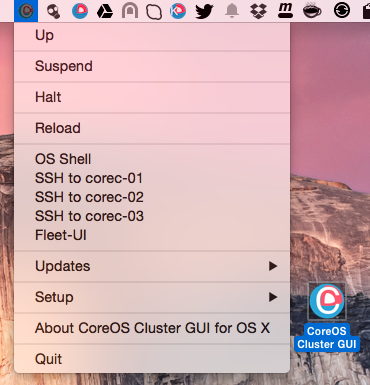

CoreOS-Vagrant Cluster GUI for OS X
CoreOS-Vagrant Cluster GUI for Mac OS X is a Mac Status bar App which works like a wrapper around the coreos-vagrant command line tool and bootstraps CoreOS cluster with one control (etcd) and two worker machines. Flannel network is set too.
CoreOS is a Linux distribution made specifically to run Docker containers. CoreOS-Vagrant is made to run on VirtualBox and VMWare VMs.

Download
Head over to the Releases Page to grab the latest ZIP file.
How to install
Required software
VirtualBox for Mac OS X hosts, Vagrant for Mac OS X and iTerm 2
Download
CoreOS Cluster GUI latest.zipfrom the Releases Page and unzip it.- Start the
CoreOS Cluster GUIand from menuSetupchooseInitial setup of CoreOS-Vagrant Cluster - The install will do the following:
1) All dependent files/folders will be put under 'coreos-osx-cluster' folder in the user's
home folder e.g '/Users/someuser/coreos-osx-cluster'
2) Will clone latest coreos-vagrant from git
3) user-data file will have fleet, etcd and 'reboot off' set
4) control (etcd) machine will be set with IP `172.17.9.101` and two cluster nodes with IPs: `172.17.9.102 and 172.17.9.103`
5) Will download and install fleetctl and etcdctl clients to ~/coreos-osx-cluster/bin/
6) Will download latest vagrant VBox and run vagrant up to initialise VM
How it works
Just start CoreOS Cluster GUI application and you will find a small icon with the CoreOS logo with the (C) which means for cluster in the Status Bar.
- There you can
Up,Suspend,Halt,ReloadCoreOS vagrant VMs - Under
Up' and 'OS shellOS Shell will have such environment set:
1) Path to ~/coreos-osx-cluster/bin where etcdclt and fleetctl binaries are stored
2) etcd endpoint - export ETCDCTL_PEERS=http://172.17.9.101:4001
3) fleetctl endpoint - export FLEETCTL_ENDPOINT=http://172.17.9.101:4001
-
Updates/Force CoreOS updatewill be runsudo update_engine_client -updateon each CoreOS VM. -
Updates/Check for updateswill update etcdclt and fleetctl OS X clients to the same versions as CoreOS VMs run. -
SSH to control-01 and node-01/02menu options will open VM shells.
Other links
A standalone CoreOS VM version of OS X App can be found here CoreOS-Vagrant GUI.
Kubernetes Cluster one CoreOS VM of OS X App can be found here CoreOS-Vagrant Kubernetes Cluster GUI .